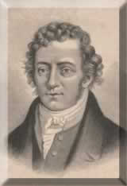

|
Andre Marie Ampere

El NIÑO DE LA AGUJA
Y llegó la A = el Amperio que es la intensidad eléctrica.
(Marzo 29-1775)
A los 12 años un niño las matemáticas dominaba,
Y cuando fue grande sus principios explicaba,
Fue el primero que a la electricidad puso medida,
Entre las dos corrientes, la negativa y la positiva.
Con una aguja en su instrumento mostraba
El flujo que como magia el fenómeno movía,
Imaginó un campo de dos fuerzas que existían,
Y con gran tesón sus características exponía.
Fue un gran maestro, paciente y humilde,
El sabía que a su amparo el mundo cubriría,
Y vivió para desarrollar su sabiduría,
Leía y estudiaba lo que su capacidad entendía.
Historia, Ciencias, Matemáticas y Filosofía,
Por su propio esfuerzo el se educó,
Y las secciones cónicas él las entendió.
Estudiaba botánica, música que en versos repitió.
Le puso nombre a las corrientes, las que respetó,
Inventando vocabulario para todas sus creaciones,
Y por eso su Intensidad pasó a ser la Medida.
Porque todo así lo vivió en su propia vida.
Y como siempre la falla existió,
Murió casi en el olvido, menos el hijo que formó.
Fue su mejor semilla que con lenguas y literatura,
Se hizo historiador, que como el todo lo transmitió.
El que de Intensidad lo inspiró.
Su nombre es una Estrella que jamás morirá,
Ejemplo que no borran ninguna oscuridad.
Junio 9-93